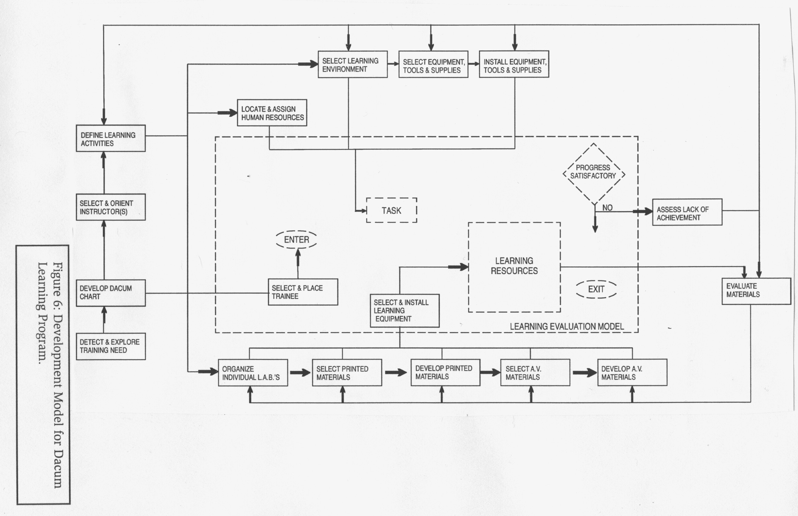
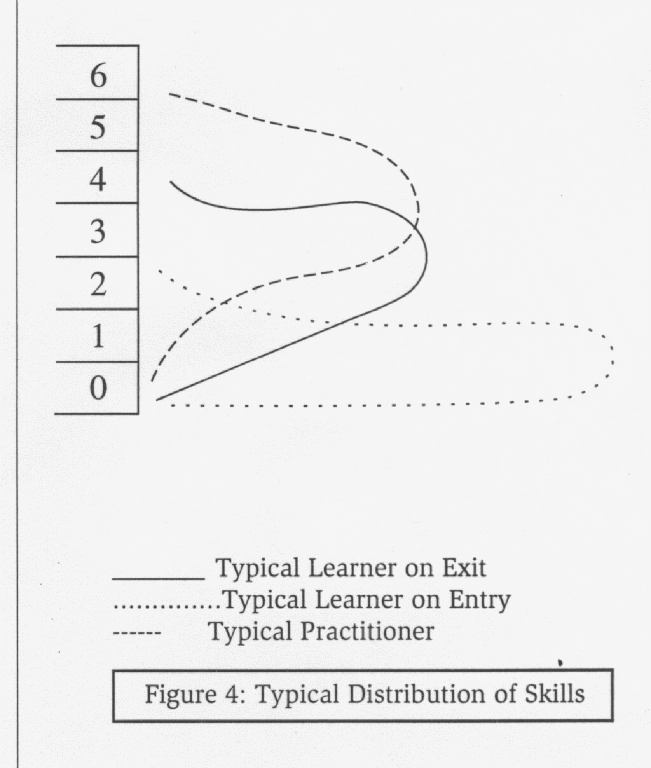
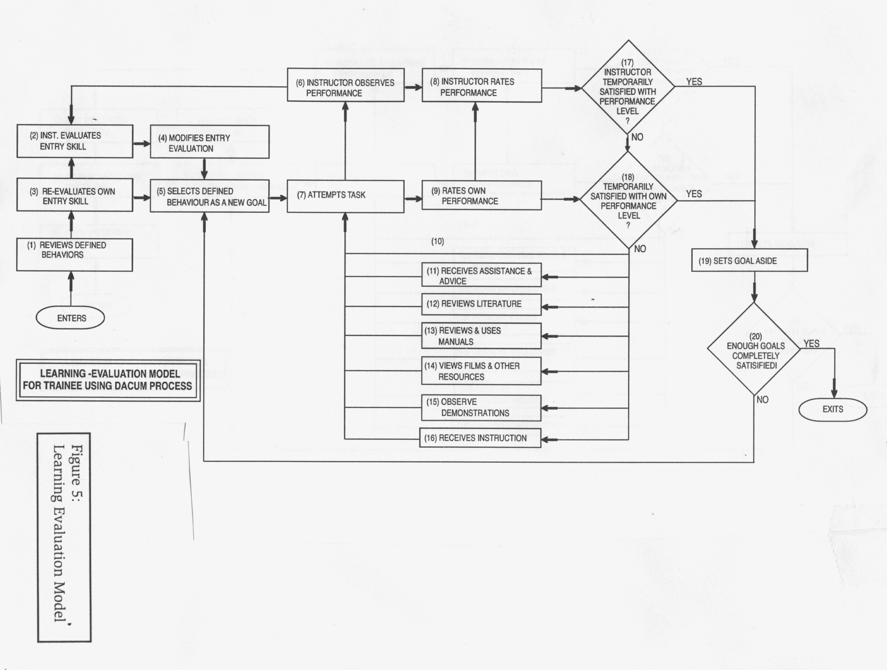

The DACUM Model
Nova Scotia NewStart Corporation
The Nova Scotia NewStart Corporation was set up in 1967 and was intended to serve Yarmouth, Nova Scotia and the surrounding area. Its purpose was to
"develop, through research and experimentation, methods and programs which can be implemented on a widespread basis to prepare unemployed and underemployed adults for stable and rewarding employment."
In early 1968, Robert E Adams was hired as Director of Occupational Training. Adams originally from Manitoba, had a Bachelor of Science Degree from Bradley University in Peoria, Illinois and had taught drafting in his home Province. In the early 1960’s he moved to the Training Branch of the Department of Labour, later the Department of Manpower and Immigration, in Ottawa where he, along with Gordon Brett, led the national initiative to develop occupational and functional analyses. The significance of analyses in the national context is described elsewhere.
In this capacity as Director of Occupational Training at the Nova Scotia NewStart Corporation, Adams would have participated in national meetings of the Canada NewStart Corporation including the one, described in an earlier chapter, in which Rice led a group through a curriculum development session based on the Clinton Job Corps experience. Given his experience with analyses, especially functional analyses, rather than curriculum development, Adams would have recognized immediately the potential of a single page presentation fotnat the approach for the development of occupational analyses.
Analysis was a standard first step in developing vocational programs. How else can one design a relevant training program without first knowing in considerable detail what was expected of practitioners? Fryklund’s Trade and Job Analysis was probably the most widely recognized textbook on the subject at the time. In Canada, most, if not all, designated trades were the subject of a trade analysis used widely by training institutions as the basis for program planning and development. Such analyses, referred to earlier in this book, were developed nationally by the Training Branch of the Department of Labour and was a focus of Adams work while in Ottawa.
On his return to Nova Scotia from the meeting which gave birth to the term, DACUM, Adams set about making analyses using group processes with selected practitioner and Adams as the facilitator. The result of his efforts was a single sheet task analysis of an occupation, a DACUM chart, with the tasks being identified by people from the appropriate occupation or field. Adams acted as a facilitator.
While Adams continued to operate under DACUM, the model which he developed is much more than a curriculum development model, he would be quick to point out that the chart was not a curriculum although curriculum could be drawn from it.
As the following pages will demonstrate, Adams’ work at the Nova Scotia NewStart Corporation was both significant and groundbreaking; because of its significance, I have drawn heavily and directly from the final report of the Corporation and present his ideas using his own words in the order in which they appear.
The Nova Scotia NewStart Corporation completed its mandate in 1975. The end-of-project report on DACUM prepared by Adams is still the most complete document available on the DACUM process. Adams continued as a resource person to a number of agencies, including Holland College and the Nova Scotia Department of Education and other agencies in Canada and the USA.
WEAKNESSES IN OCCUPATIONAL TRAINING
Adams (pp.1-20) made some observations on the circumstances, problems or weaknesses in occupational training during the period in which DACUM was developed. His observations were not the result of an exhaustive study but rather reflected commonly held views of the day. These, according to Adams, typified problems which the DACUM system was designed to overcome.
A Lack of Programs
Adams was struck by the lack of occupational training especially for the disadvantaged adult. The training available left many gaps. He attributed these gaps to actual or perceived jurisdictional gaps as between high schools, trade schools, apprenticeship and others training providers. He also noted the gaps arising because not enough trained people were required in some occupations with the resulting inability for institutions to gear up and provide training. As well, there were gaps due to our geography whereby most training was only available in larger metropolitan areas.
A second cause of gaps results from the "cult of efficient training", the urge to over design training in ways that, at the time, were perceived to be highly efficient. Frequently training was not provided because the number of trainees involved would result in high per trainee costs. On the other hand, some training programs were often starved in the name of efficiency. Furthermore, the developmental tasks of a training program may seem outrageous for a small number of potential trainees.
B Weaknesses in Current Programs
Adams viewed occupational training as being under a number of significant pressures which do not apply to mainstream training. These include the pressures to conform to traditional views and approaches to learning, the emphasis on rigid curriculum organization and sequencing of what is to be taught, the emphasis on group-based learning, the emphasis on the acquisition of information rather than its application, the focus of evaluation on the acquisition of information and concepts, the escalation of course and program entry requirements, the lack of measures of behaviour change, and the inhibiting of self direction of individual learners. Adams also emphasizes that DACUM based program planning and development greatly reduces the amount of time required to mount a new program. It also allows learners with prior relevant experience, and who are self directed, to achieve competence in shorter periods of time.
C Handicaps for the Disadvantaged
The focus of Nova Scotia NewStart Corporation was on training for the disadvantaged and Adams identified some specific weakness in existing programming which would affect the chances of success of disadvantaged adults. These include the "unrealistic level of stated entrance requirements in the form of prerequisite learning and achievement", the frustration of having curriculum stated in terms of subject matter rather than in terms of readily understood and meaningful occupational tasks, lack of short term goals as part of the training process, lack of prior success in school, experience as a "passenger “in learning, lack of successful experience in self-direction, inability to relate schooling to real-life situations, poor motivation and resentment or rebellion against authorities and structures.
WHAT IS DACUM ?
In the final report on DACUM-based training at the Nova Scotia NewStart Corporation, Adams defined DACUM as follows: (Adams p.24)
"DACUM can be defined as a single-sheet skill profile that serves as both a curriculum plan and an evaluation instrument for occupational training programs.
It is graphic in nature, presenting definitions of the skills of an entire occupation on this single sheet of paper. This discourages treatment of any element of the occupation in isolation. Stated differently, it promotes treatment of any element as part of a larger whole.
It is an analysis of an occupation rather than a curriculum evolving from an analysis. The occupation is sub-divided into General Areas of competence. Each is then analyzed to identify each skill it contains. The result is independent specification of each of the skills (behaviours) that collectively enable an individual to perform competently in the occupation. These skills are defined quite simply and are structured independently in small blocks on the chart. Each can serve as an independent goal for learning achievement.
A DACUM chart contains a rating scale that accommodates evaluations of skill development achievement for each of the defined skills or behaviours. The chart also serves as a record keeping system, as all ratings of skills are recorded directly on a copy of the DACUM chart maintained for each trainee."
He further identified the characteristics of DACUM as (Adams p. 259):
1. Immediate feedback of results to the trainee.
2. Immediate analysis of program strengths and weaknesses.
3. Positive communication between instructor and trainee.
4. Self-evaluation by the learner.
5. Self-planning and goal setting.
6. An interesting, efficient, and practical, yet unstructured learning environment.
7. Onus for evaluation and qualification on the trainee.
Positive relationship between training evaluation and the type of evaluation normally made by employers.

9. Cumulative approach to achievement (the DACUM process will not allow negative or downward evaluation unless the trainee and instructor agree that a previous evaluation was in error.)
10. An entry measure which takes into consideration the trainee's previous training and experience and allows him to proceed from his own appropriate point of departure.
It is unfortunate that many DACUM practitioners have limited themselves to only that part of the model which uses a brainstorming technique to identify competencies. But even for this, it is a valuable and versatile tool. The full model developed at Nova Scotia NewStart, however, is much more than that and, in its full implementation, has great potential.
THE DACUM CHART
Providers of occupational training have always used a form of occupational analysis. In the early days of "manual training", it was based on the Russian or Swedish system. When the writer studied to become an industrial arts teacher, Fryklund, Ericson and Friesen were the common references for analysis and curriculum development. Mager's work on instructional objectives was a later influential development. This was followed, at least in Canada, by occupational analyses prepared under the direction of the Technical and Vocational Training Branch and used by Provinces as a basis for program planning and development.
At Nova Scotia NewStart Corporation, the training process began with an analysis. The result was a DACUM chart which is the foundation document of the model wherever it is followed today.
"The accurate preparation of a DACUM chart is the most important aspect of developing the program. As with most programs utilizing behavioural objectives, the accurate specification of these objectives is critical." (Adams p. 43)
The validity of the DACUM analysis process is based on the view that:
People who work in an occupation or field are best able to identify the skills performed in that field.
A committee of people from the occupation or field, with the aid of a trained facilitator, can identify most if not all of the required skills in a concentrated period of time.
The DACUM analysis differs from conventional approaches in a number of ways: (Adams pp. 43 - 44)
1. Only observable behaviour is identified.
2. Skills are stated within the context of the DACUM rating scale...
3. The analysis is conducted by the industry or other eventual users of the training product, ...
4. ... skill definitions encompass more activity than the typical teacher-specified skill definitions.
5. The analysis is conducted by means of a dynamic group activity.
6. The analysis results in a format that is directly applicable as a curriculum.
CONCEPT
The preparation of a DACUM chart involves bringing together 10 - 15 people from an occupation or field and, with the aid of a skilled coordinator, having them identify the skills practiced by people in that field. As skills are identified, they are printed on cards which were fastened to a wall in horizontal rows. In this way, an analysis emerges through the efforts and in front of the committee. The use of cards makes it easy to add, change, remove or rearrange skills during the brainstorming process. A chart presents the skills in the same words and format as identified by the committee and posted on the wall but in a more manageable size.
A DACUM chart is a presentation of an analysis. It displays the tasks or skills of a field or occupation which have been identified during the analysis process. It is not a curriculum but a curriculum can be selected and developed from it.
COMPONENTS
The description which follows, deals with the components of a DACUM chart, preparation for making a DACUM chart and the chart-making process. The objective is to provide an understanding of a DACUM chart; it is not to provide a "how-to manual” in DACUM analysis.
A DACUM chart may be considered to have four components; general areas of competence, skills or competencies, rating scale, and profiles.
General Areas of Competence
General Areas of Competence (GAC's) are the major divisions into which skills are organized. They are logical groupings of the skills in an occupation or field. Skills may be considered subdivisions of a GAC and GAC's may be considered sub-divisions of an occupation or field. The number of GAC's will vary from occupation to occupation, however, the number usually ranges from 8 to 12. Figure 1 shows the relationship between GAC's and skills. The GAC's are located on the right side of the chart so that a trainee progresses on a skill by skill basis towards the General Areas of Competence. The rating scale is also located to the right.
Skills or Competencies
With GAC's completed, individual competencies can be identified. Cards identifying individual skills form horizontal bands on a wall and each competency can be viewed as a subdivision or component of a GAC. A facilitator manages the identification process to ensure that the occupation is adequately covered. As the chart is developed, it will likely become obvious that some skills could fit equally well into other bands. In the case of a very small number of skills, the decision on placement may seem to be a rather arbitrary one. The number of skills in an occupation or field varies from chart to chart, however, a review of many charts suggests an average of from 150 to 200.
Rating Scale
Adams is of the view, which the writer shares, that a rating scale should be an integral component of each DACUM chart. Because of its significance, however, it is dealt with in a separate chapter.
Profiles
Once a chart is prepared, it is possible and frequently desirable to strike one or more profiles. A profile involves the identification of certain skills which form a part or subset of an occupation. A profile may even be an occupational classification in its own right. A profile also notes minimum rating levels. On a chart for the secretarial field, for instance, one could strike a profile of receptionist, clerk typist, or secretary. A company may strike its own profiles on the chart to clarify its own jobs. Profiles should only be struck after an analysis has been completed.
GETTING READY
Careful groundwork must be undertaken before an actual chart is developed. Preparation activities include:
1. Defining the scope of the occupation or field
The scope of the occupation or field to be analyzed must be carefully considered before selecting a committee or commencing an analysis. Too narrow a scope results in defining only a segment of an occupation; too broad a scope leads to skills being too generalized with the additional danger of important skills being missed.
2. Selecting a committee
In selecting a committee, a number of considerations should be taken into account: (Adams pp. 47 - 48)
1. Adequacy of coverage of the major defined categories of a specialty or occupation.
2. The size of the typical firms that utilize the occupation.
3. Adequacy of coverage of concentration of specialization in the field.
4. Minimal committee size.
In addition to the above considerations for the committee as a whole, individual members should have the following qualifications: (ADAMS pp. 48 - 53)
1. Competence in the occupation
2. Full employment in the field
3. Considered by associates to be alert and forward thinking
4. Capable of verbalizing the needs and skills of his occupation.
5. Considered by associates to be capable of functioning as a member of a group.
6. Freedom from bias
7. Confidence
8. Freedom to devote full time for the required brainstorming session
3. Selecting a coordinator
Putting a dozen people together in a room, regardless of how competent and committed they are, does not guarantee a quality DACUM chart. Leadership and a clear understanding of the task are also required. An experienced coordinator is a must.
Without trained leadership, skills may be ill-defined, skills may be missed, irrelevant skills may be included, and committee members may become discouraged and drop out before the chart is completed.
The chart facilitator is key to successful chart-making. Adams (p. 59) suggests the following skills and abilities for a successful coordinator:
1. Hand letter quickly and clearly.
2. Familiar with a variety of occupations.
3. Familiar with curriculum development
4. Able to resolve within himself the "skill-knowledge debate".
5. Extremely patient
6. Unyielding in applying DACUM principles
7. Able to provide on-the-spot orientation and reorientation to committee members.
8. Able to identify when committee members start getting off track.
9. Keep the attention of the committee members on the wall.
10. Assist committee members in identifying skills
11. Maintain his schedule of progress and activities
12. Maintain a steady work pace.
13. Maintain momentum when it is present.
14. Encourage and promote brainstorming.
15. Maintain a positive approach to skill definition and the task at hand.
16. Control the group
17. Control and assist in final clarification of skills.
18. Allow (and encourage) the committee to talk out issues on its own.
19. Display common sense.
20. Encourage acceptance procedures
21. Resolve disagreement among committee members
22. Determine when all skills are covered.
23. Terminate sessions with committee members in a favourable manner
24. Disband a committee that is not functioning properly.
3. Physical arrangements
The physical requirements for making a DACUM chart are both simple and flexible. In essence, they consist of a quiet, well lighted room with a large blank wall, a row of tables and chairs which can be arranged in a straight line facing the blank wall, a supply of 3 x 5 and 5 x 7 inch index cards and felt pens, some adhesive with which to attach cards to the wall, and a supply of coffee or juice.
BRAINSTORMING PROCESS
The session begins with a flexible, careful, informal, non-technical orientation to the DACUM approach. Beyond this, the basic steps in the process are : (Adams p.81)
Establishing General Areas of Competence
General Areas of Competence are "merely logical groupings of all the skills in the occupation. Their selection helps the committee in its later task of identifying skills, organizing them is one fashion, and making certain that none are overlooked.".
The establishment of the GAC's is a critical step in the analysis process. It provides the introduction of committee members to the analysis process and sets a framework for individual skill identification. GAC's are printed on cards, this time 5 x 7 inches, and are placed on the right hand side of the blank wall in a vertical line. Individual skills form horizontal lines leading out from each GAC.
Typically General Areas of Competence form around such groupings as administrative skills, use of tools and equipment, use of test equipment, analytical problem solving, and communication, but this is not a deliberate design of the DACUM coordinator.
First Band
The first band for skill identification becomes both a learning exercise for the committee and a real list of skills of the field or occupation. It may be necessary, and it is important, therefore, for the coordinator to often review the purpose and ground rules of the analysis process. Cards are placed on the wall from left to right as quickly as they are identified; ordering or arranging is a later step. It is usually advisable to select as the first band one with which the Committee seems comfortable and the coordinator believes will result in a successful experience for the Committee and sets the stage for a successful chart.
Additional Bands
Having completed the first band successfully, the committee now moves on to another band; it is also defined independently. While the process is the same, the nature of the skills to be identified may require different action words or even quite a different way of thinking. The Committee continues its work until all skills in all bands are identified.
Review
Following completion of all bands, the Coordinator leads the committee through a brief process of examining the wording of each skill. This is done in order to "improve the quality of definition of each skill."
Sequencing
At this stage skills in each band should be sequenced and the overall chart structured. The committee is asked to imagine that they are the sole "experts" in this field and have just hired a new, young, untrained employee. The task is to sequence the skills in a band in the order in which they would teach a new employee and have him or her apply the skills in their daily work. They are asked to bear in mind that the employee should be put to work on tasks that result in a return on investment to the employer. The skills which the supervisor would reserve for himself are at one end of the line and the skills which would be assigned to a new employee are at the other end of the line.
A final scan is made of the entire chart to check the relationship between the location of skills in the separate bands. It may be necessary to relocate a few cards but there should not be a wholesale reorganization of any band or the chart as a whole.
Final Agreement
Just before the committee breaks, the Coordinator should review the chart in a generalized fashion to solicit agreement that the chart is "a reasonably accurate description of the occupation, that it is comprehensive, and that it is accurately structured." At this time the committee may suggest that bands be relocated.
The final task for the Committee is to suggest a title for the chart. The name should reflect the field analyzed and the tasks identified. The names of training courses and programs based on the analysis may well differ from the name of the field.
RATING SCALE
Another unique feature of DACUM is the seven-point performance-based rating scale which is printed on each DACUM chart. The criteria and levels reflect those of the workplace. Evaluation is of observable behaviour of the kind that an immediate supervisor would recognize in a work situation. The evaluation process is simple, clear, easily understood by both employer and employee alike and is directly applicable to trainees preparing to work in an occupation or field.
Traditionally, school evaluation systems relate only to the acquisition of information in a school setting. DACUM evaluation is different; it is based in the reality of the real life work situation where application of knowledge, or performance, is the rule.
DACUM Rating Scale
A DACUM chart identifies competencies or skills and the rating scale includes criteria woven together into a scale which identifies recognizable levels of performance on any skill. The rating scale is rooted in the reality of the workplace through the establishment of a benchmark - in this case, level 3, which denotes the performance level of a trained and experienced worker.
Can perform this task with more than acceptable speed and quality, with initiative and adaptability and can lead others in performing this task. |
6 |
Can perform this task with more than acceptable speed and quality and with initiative and adaptability to special problem situations. |
5 |
Can perform this task satisfactorily without supervision or assistance with more than acceptable speed and quality of work. |
4 |
Can perform this task satisfactorily without assistance and/or supervision. |
3 |
Can perform this task satisfactorily but requires periodic supervision and/or assistance. |
2 |
Can perform this task, but not without constant supervision and some assistance. |
1 |
Cannot perform this task satisfactorily for participation in a work environment.
|
0 |
Figure 2: Rating scale used to evaluate performance on skills identified on the DACUM analysis.
BASIS OF RATING SCALE
Occupationally-skilled employers or supervisors typically observe and assess performance in a very informal yet hard-nosed way. This is based on the view that: (Adams p. 198 - 199)
1. Supervisors are able to sense their satisfaction or dissatisfaction with a task being performed. A number of factors may be combined simultaneously, such as speed with which a task is performed, the quality of the work that is visible, and the usefulness of the product being built, yet the good supervisor is able to make judgements about his satisfaction with performance involving a number of such assessment factors.
2. Supervisors assess performance by observation, followed by a rather subjective expert decision or judgement. They seldom administer tests, and, in other than in the most simple or repetitive jobs, they seldom have an opportunity to measure performance in terms of production or quality of product.
3. The occupationally competent supervisor can tell when a good job is being done while he observes and monitors work. In other words, he can tell a good job when he sees it.
4. The good supervisor typically avoids making judgements about performance on the basis of isolated instances. He has to be shown that the individual can apply his skills in a variety of situations before that performance is satisfactory.
5. While he professes otherwise during curriculum meetings, the good supervisor seldom makes judgements about ability on the basis of employee's knowledge. Again, he has to be shown that the individual is capable of performing and achieving before he will grant recognition.
6. The technically competent supervisor is able to observe and assess mental problem-solving skill performance not observable by those not expert in the occupation. He can detect whether or not, or how well, an employee is applying design or problem-solving thought process that are not directly observable in action or not directly visible in the end product.
7. The occupationally competent supervisor does not need rigid performance criteria to assess adequacy of performance. Adequacy is exhibited in the speed and quality of application of skill and the results of the work.
8. The good supervisor appreciates the fact that most rigid criteria developed for training programs are not really part of the job. For example, few executives are concerned about the typing speed of their secretaries. They know when they are satisfied with the speed of production of a memo, a formal letter, or a project proposal or brief. They are little concerned about whether the secretary can type at 60 or 80 words a minute.
9. Most supervisors readily express their concern about educational-type measurement and entry qualifications. They recognize that there are some persons who are not able to qualify for entry to the occupation but who perform reasonably well on the job once they are able to gain entry. They realize, too, that there are persons who more than qualify but who do not seem to be able to produce or fill job requirements. Finally, they recognize that there are persons who minimally qualify but who become outstanding once in the job environment. "
The DACUM rating scale is based on the view that most workers are judged on the basis of quality of work, quantity of work which they produce in a given period (time) and amount of supervision required. These are the major criteria; a review of the scale will identify others mostly for more experienced workers. These criteria are woven into the rating scale shown in Figure 2. The rating scale is applied to all skills and is interpreted in relation to the occupation or field.
There are two distinct approaches to assessing performance. one is to identify levels of performance on each skill or competency and, later, to make a judgement on the level of achievement on the aggregation of all skills. The other, and the one adopted in the DACUM model, is to add the already developed standard DACUM rating scale. This rating scale is applied to each skill.
RATING LEVELS
Adams defined the values of each number on the rating scale as follows: (Adam p.28)
"The definition with the value of '3' was established first as a baseline for measuring occupational skills. It describes the minimum performance normally expected in each skill of a minimally qualified person such as a journeyman in one of the skilled trades.
The definition with the value of '0' indicates unsatisfactory performance. In other words, the individual is unable to perform well enough for pay in a work environment. It covers the person who has attempted to learn and cannot master the task as well as the person who has had no opportunity to learn.
The definition of the value of '1' is the first level of successful performance. It is characteristic of a trainee who is able to perform the task, but normally cannot achieve it alone. He may need help in each new assignment and he may often run into problems that require expert assistance. He would normally be expected to perform only in a work environment where direction and expert assistance are close at hand and constantly available.
The definition of the value of '2' indicates that the individual is fairly capable of functioning independently in performing the task and needs only periodic supervision and assistance. This individual could be placed in a much larger work environment where a single supervisor would be on hand to respond to periodic needs of many individuals.
The definition of the value of '4' is for those individuals whose performance in terms of speed and quality is better than would be expected at a minimum level of journeyman performance.
The definition with a value of '5' is for excellent performance in the task. Not only can the individual perform with more than acceptable speed and workmanship, but he has reached a level that enables him to solve unique problems in his work with initiative and adaptability. This category represents the highest level of technical performance.
The definition with the value of '6' is for the top level of employment in the occupation. The individual performs exceptionally well and has the ability to lead others in performing the task. He is undoubtedly the type who would be considered for a supervisory or instructional role in the occupation."
RECORDING TRAINEE PROGRESS
A trainee's progress is recorded directly on the DACUM chart. This occurs by entering the rating level directly in the box enclosing the skill. An entry rating is enclosed in a diamond; a confirmed rating is enclosed in a circle. The date of all ratings is also recorded. An example of skill ratings is given in Figure 3. (Adams p. 33)

Figure 3: DACUM Approach to Recording Student Progress
It must be remembered that the rating scale is employment or industry based. It is not a training institution based scale. All ratings are consistent with ratings which would be given for the same performance if the trainee was an employee rather than a trainee. The scale is based on the reality of the workplace.
TYPICAL DISTRIBUTION OF SKILLS
Distribution of skills will vary from employee to employee or trainee to trainee. Each person will have his or her own profile of skills learned and level of performance.
Figure 4 shows the distribution of rating levels by a typical practitioner, a typical new trainee on entering a program and a typical trainee on exit from a program.
LEARNING MODEL
DACUM is learner/trainee centered and driven. It is designed to assist trainees to meet their learning objectives whether to upgrade existing skill levels, acquire new skills, obtain or enhance specific skills required for a particular task, to obtain entry into employment or for certification.
The DACUM approach is the first training model known to the writer in which a flowchart has been prepared to show the progression of the trainee through the system. It provides in very clear and precise terms, the sequence of activities which the learner is likely to encounter.
A copy of the learning model is included as Figure 5. The chart should be referred to frequently while reading the paragraphs which follow. For convenience the blocks on the chart have been numbered and are used in the sequence of activities described below. Adams describes the steps as follows: (pp 29)
" When he enters a training program, the trainee is oriented to the learning environment, familiarized with equipment, tools, materials, etc., and presented with a copy of the DACUM chart which he....
1. .... reviews with the help of the instructor, to familiarize himself with the terminology used, to clarify what is meant by defined behaviours on the chart, to familiarize himself with the attached rating scale, and to learn to apply the scale to skills he may have and how to record these evaluations. When the instructor is confident the trainee understands the chart and the rating process, the trainee....
3. .... proceeds to evaluate his prior experience and to define the level of skill he feels he has in any of the skills defined on the chart. This may be done individually or in a classroom setting. The instructor may assist the trainee with

one or more ratings to ensure that he understands the process. Once this self-rating is completed, the instructor meets with the trainee and ....
2. .... prepares an entry level profile of the trainee's skill. He uses the trainee's DACUM sheet and ratings as a starting point for the discussion. He explores each of the skills and tries to confirm the accuracy of the trainee's ratings by asking him: (a) to describe how he performed the skill; (b) to tell when or where he performed it; (c) to describe the qualifications of the person with whom he worked. He will also explore some of the categories left blank by the trainee. The instructor records new ratings (or the same ones) on a master chart for the trainee in his presence. In some cases the instructor may give higher ratings and in other vases lower ratings. This process causes the trainee to ....
4. ... modify his evaluation as he will now have a better understanding of the occupation which he is seeing defined in this way for the first time. He will also realize better what the instructor expects of him and what will be expected of him, in terms of performance, when he enters employment. During or as a result of this entry rating interview with the instructor, he will ....
5. .... select one of the skills on the DACUM chart as an immediate goal. It may be a skill he has already performed to a limited degree and wants to improve, on he has observed in others and would like to be able to acquire himself, or one he realizes he has to acquire to enable him to complete a specific project or job. Perhaps on his own, or perhaps with the help of an instructor, he ....
7. .... attempts to perform the selected tasks.
The instructor will closely ....
6. .... observe performance in tasks the trainee attempts for the first time, and will be able to confirm the accuracy of ....
2. ...his initial evaluation of the trainee's entry skill (if any).
If there are apparent in accuracies, he will subsequently revise the entry level ratings given to the trainee.
This initial attempt at performing a task will normally take place in the presence of the instructor who will discuss with the trainee what is involved in the task, and what equipment, tools, materials, and information may be required. He may also set up a situation so that the trainee can perform the task. Following this attempt at performing a task, the trainee ....
9. .... rates his own performance using the rating scale included in the DACUM chart. If he feels that he has performed to one of the acceptable levels (1-6) on the scale, he records the appropriate rating on his copy of the DACUM And notes the date nearby. If he is ....
13. .... not satisfied with his own performance (he has not performed to one of the acceptable levels on the scale), he will ....
10. .... again attempt to perform the task (perhaps several times) until he is satisfied, or he may wish to apply additional learning resources to the solution of his problem. He may ....
11. .... request and receive some assistance and advice from the instructor ....
12. .... he may review literature related to the development of this skill ....
13. .... he may review and use relevant manuals , information sheets, or job sheets,
or ....
14. .... he may be directed to and review films or other audio-visual resources.
If the instructor finds a number of trainees having the same difficulties with the same tasks, he will, on request, organize group activities that will enable the trainee to ....
15. .... observe demonstrations by the instructor or another skilled person, and ....
16. ....receive instruction in the form of lectures by the instructor or another expert.
If the trainee finds he can now complete the task, after bringing one or more resources to bear on the problem, he rates his own performance as successful (to one of the Levels on the rating scale) and then asks the instructor to confirm the rating. The instructor meanwhile has been ....
6. .... observing the trainees performance in attempting the task. He is able to ....
8. .... rates the trainees performance as he has observed it, using the trainee's own rating to assist him in reaching a decision.
He will record his own rating on the master copy of that trainee's DACUM`chart and will note the date nearby. This is done in the presence of the trainee. If the instructor is ....
17. .... temporarily satisfied with the trainee's performance and the trainee is ....
18. .... temporarily satisfied with his own performance, then ....
19. .... the goal will be set aside until a later date when the trainee again decides to improve on that skill or is influenced into improving it by the skill needs of another learning situation.
If the instructor is ....
17. .... not temporarily satisfied with the trainee's performance, he will discuss the quality of performance and reasons for his decision with the trainee. This will probably cause the trainee to become ....
18. .... dissatisfied with his own performance (even though he may have earlier decided that he could perform reasonably well) and to recycle through the resources and again attempt the task, seeking a performance level that will satisfy the instructor.
As long as there are ....
20. ....not enough goals completely satisfied the trainee will ....
5. .... select new goals he has not yet attempted or again select goals he can and should improve.. This process continues until both the trainee and instructor (and possibly a prospective employer) agree that the trainee has performed ....
20. .... satisfactorily in enough goals to enable him to perform competently in an employment situation in the occupation.
At this point the trainee exits from the program.
LEARNING MANAGEMENT
Instructors in a DACUM based system operate differently than their colleagues in a more traditional system. They need a different mix of instructional skills.
TRADITIONAL SKILLS
Skills which are important in traditional system but which are of less significance in the DACUM system include: (Adams 128)
(a) Ability to handle group presentation. One of the traditional requirements of an instructor is the ability to present lectures, demonstrations, etc., to groups of learners. Normally required are a good range of verbal skills and confidence in speaking to a group. Little group presentation is applied in the DACUM system. In most situations it is discouraged because most DACUM instruction is intended to be provided on a one-on-one basis or to a very small ad hoc group.
(b) Ability to prepare and evaluate tests. One would normally be concerned with finding persons with at least potential ability to construct a variety of evaluation instruments. Often this necessitates a requirement for prior instructor training in a formal program. Such instruments are not used in the DACUM system.
(c) Ability to organize instruction. Normally, there is a need to recruit instructors with ability to plan training programs, establish instruction sequence, and schedule and organize presentations. There is also a concern about the ability to describe these in the form of curriculum outlines and training plans. Such abilities are usually developed through formal instructor training. Again, these abilities are not required in the DACUM system.
(d) Ability to write instructional materials. Conventional programs, especially those which are information-based, require instructors to prepare a variety of printed instructional materials suitable for delivery to groups of learners. They must be able to write materials that will either support or fill gaps in available modes of presentation. Because of the flexibility of the DACUM system, this is not required. The instructor can draw on a variety of sources of information, hence need not have this kind of technical competence.
CHARACTERISTICS OF INSTRUCTORS
Instructional staff will likely be a combination of both new and existing staff. Many existing staff will have considerable difficulty in "letting go" of the traditional model and the central role played by the teacher. It is not easy, especially if that role has been a successful one. In selecting instructional staff, one should look for: (Adams pp 127 - 128)
(a) Expertise in the occupation as indicated by extent of ability to cover the chart.
(b) Evidence that the applicant is a "veteran" in the occupation. This is not necessarily related to length of time in the occupation. Some relatively young persons may be known for their ability to handle a wide range of assignments.
(c) Responsibility in the occupation. In order for the instructor to relate the requirements to new or developing learners, organize useful learning experiences, and assess acceptable performance, there should be some evidence that he was able to handle a responsible position in an industrial environment demanding the application of much the same skills.
(d) Capability in directing the work of others. Because the DACUM learning environment replicates or simulates industrial job conditions, many learning activities should be group or team projects. The instructor should have demonstrated some ability to lead teams in his prior work experience.
(e) Imagination in adapting techniques in occupations. There should be some evidence in his industrial work that he is imaginative in applying the skills or techniques of the occupation to a wide range of tasks. He will be required to do this in the learning environment while helping learners identify applications for skills they desire to acquire. Similarly, this expertise will be required in initially identifying learning activities and in simulating and replicating skills, projects, and work in the learning environment.
(f) Interest and ability in developing others on the job. It is important that the instructor like to work with people in terms of developing their skills on the job.
(g) Ability to assess skill performance. The instructor would have been in a position in industry where he was required to make on-the-spot assessments of skill performance. Persons with supervisory experience typically have this ability, as well as persons who have spent considerable time as members or leaders of project teams. The expert in the occupation who usually works alone might be unsuitable even though he might be theoretically and technically competent.
Adams included the instructor's role as part of the learning and program development models. It may be useful at this time, therefore, to review the flowchart, Figure 5, and to focus specifically on the role of the instructor.
PROGRAM PLANNING AND DEVELOPMENT
Successful individualized and competency based programs takes careful and extensive planning. DACUM is no exception. A summary of the planning process follows. The approach to program planning and development is described briefly, however, a detailed description of the planning process is included in Adams' report: (Adams pp. 34-37)
"To apply the DACUM system effectively, ensure that the Learning-Evaluation Model will work, and ensure that training system needs are met, it is necessary to establish new priorities for developing a program and preparing and organizing resources.
The Program Development Model (1) describes development categories that should be considered and the sequence in which they should be treated. It should be noted that development occurs as a continuous recycling process and is designed to continue through the life of the program.
The Program Development Model is superimposed over the Learning-Evaluation Model which is shown in dotted lines. Connections are made with essential components of the Learning-Evaluation Model.
1. Detect and Explore Need - is the process of establishing need for a training program or for extensive modification of a program. Assuming this results in a decision to use the DACUM process, the following must be identified: the employing community, the decision makers, potential instructor(s), potential resource persons for specific components of the program.
2. Develop DACUM Chart - is the process of committee specification of the skill requirements of the occupation.
3. Select and Orient Instructor(s) - can be finalized once the DACUM chart is prepared. The Chart indicates the scope of skills that must be handled in the program, and from this the skill requirements of prospective instructors can be assessed. Introductory orientation should take place before placing heavy development responsibility on the instructor. However, it will continue informally well into the actual operation of the program.
4. Define Learning Activities - is the process of assessing each identified skill on the DACUM chart and visualizing appropriate work-oriented activities through which the student can gain experience and through which his achievement can be evaluated.
5. Select and Place Trainee - is done in two stages. First, the trainee is screened on the basis of his predicted ability to succeed in acquiring each of the skills on the chart, as opposed to assessing his ability on the basis of past learning performance. Second, he can be placed directly in an on-the-job training environment if adequate resources are available or he can be detained until all the resources are available for an in-centre training program.
6. Select Learning Environment - involves assessment of each skill and its associated learning activities to determine availability of learning resources and realistic learning experiences in a number of environments. It may be decided to locate training for the skill in a work environment because the experience will be more meaningful or the training less expensive. On the other hand, it may be safer and more convenient to locate training for the skill in a more controlled learning environment. In most cases, it is found feasible to conduct part of the training for the skill in each environment.
7. Select and Order Equipment, Tools, and Supplies - involves the selection of occupational tools, equipment, supplies, parts, etc. These may be available in an on-job-training site but must be obtained for a centralized training program.
8. Install Equipment, Tools and Supplies - is the process of organizing or modifying the selected learning environment(s) in preparation for the trainee's first task-oriented experience, ensuring that all resources are organized for his convenience.
9. Locate and Assign Human Resources - is the process of ensuring that all components or skills of the chart are adequately covered by available human resources. This involves assignment of instructors to skills and arrangements to bring in resource persons to handle any skills that cannot be handled by the instructional team.
10. Organize Individual Learning Activity Batteries - involves two steps. First, an individual package or container is prepared for learning materials for each skill on the DACUM chart. Second, an assessment is made of each skill and its associated learning activities to determine what supporting knowledge will likely be required.
11. Select Printed Materials - is the first step normally taken in developing a Learning Activity Battery. Materials are selected on the basis of their projected value in terms of facilitating learning. No materials are included which are not directly related to the skill identified.
12. Develop Printed Materials - is the process of developing printed materials to supplement those that are already available.
13. Select AV Materials - involves two separate assessments of requirement. One, there may be a need to have visual materials available for those learners who may have reading deficits or may not be attracted to reading as a method of acquiring information. Two, specific skills that require extensive procedures, intricate motions, or the acquisition of complex concepts may best be learned from audio-visual materials. The materials in this category are usually commercially available.
14. Develop Audio-Visual Materials - is the development of materials by instructional staff. These may be videotaped demonstrations and presentations, tape-slide presentations, or audio tapes accompanied by textbooks or other printed materials.
15. Select and install Learning Equipment - involves analysis of Learning Activity Battery resources to determine what equipment and furniture are required and installing this. The preceding activities are all part of establishing the initial program. The following activities take place after the first trainees have had an opportunity to cycle through the steps in the Learning-Evaluation Model.
16. Assess Lack of Achievement - is the obvious starting point in refining the learning program. Lack of achievement might be attributed to:
(a) Lack of motivation or specific learning difficulties on the part of individual trainees.
(b) Ineffectiveness of resources.
17. Evaluate Resources and Materials - will result where lack of achievement is attributed to ineffectiveness of resources. Resources might be ineffective for a number of reasons:
(a) Learning activities may be inappropriate or inefficient.
(b) The learning environment may not be adequate.
(c) Necessary equipment or supplies may not have been made available or may not be appropriately located to facilitate task achievement.
(d) Materials in a Learning Activity Battery may be inadequate or insufficient . This will be indicated by learner difficulty or frustration while working with materials. Materials may need to be added, or removed because they are confusing or inappropriate.